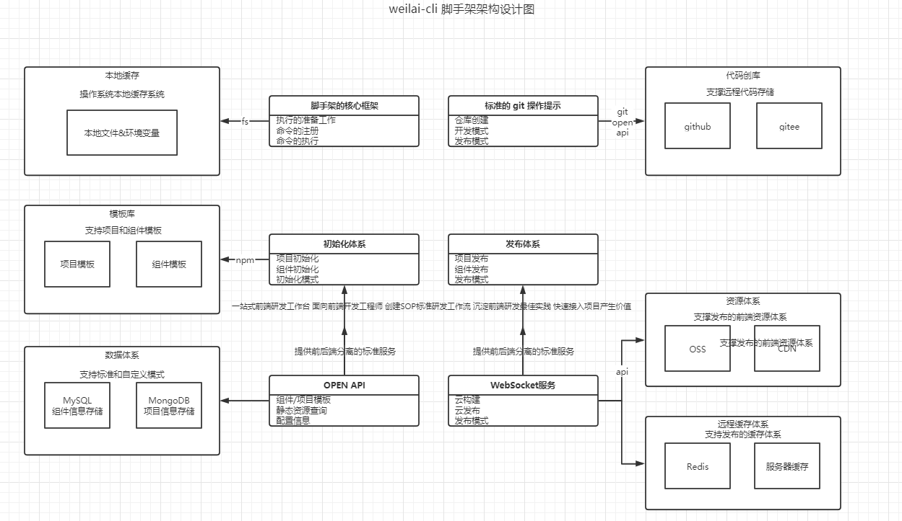

脚手架核心流程开发
标准
绘制 imooc-cli 脚手架架构设计图

实现 imooc-cli 脚手架准备过程代码
try {
checkPkgVersion()
checkNodeVersion()
checkRoot()
checkUserHome()
checkInputArgs()
checkEnv()
await checkGlobalUpdate()
} catch(error) {
log.error(error.message)
}
// 检查是否需要全局更新
async function checkGlobalUpdate() {
const currentVersion = pkg.version
const npmName = pkg.name
const lastVersions = await getNpmSemverVersions(npmName, currentVersion)
if(lastVersions && semver.gt(lastVersions, currentVersion)) {
log.warn('更新提示', colors.yellow(
dedent`
请更新 ${npmName}
当前版本: ${currentVersion}
最新版本: ${lastVersions}
更新命令: npm install -g ${npmName}@${lastVersions}
`))
}
}
// 环境变量检查
function checkEnv() {
const dotenv = require('dotenv')
const dotenvPath = path.resolve(userHome, '.env')
if(pathExists(dotenvPath)) {
config = dotenv.config({
path: dotenvPath
})
}
createDefaultConfig()
log.verbose('环境变量:', process.env.CLI_HOME_PATH)
}
// 创建默认的环境变量配置
function createDefaultConfig() {
const cliConfig = {
home: userHome
}
process.env.CLI_HOME_PATH = cliConfig['cliHome'] = process.env.CLI_HOME
? path.join(userHome, process.env.CLI_HOME)
: path.join(userHome, constant.DEFAULT_CLI_HOME)
}
// 入参检查
function checkInputArgs() {
args = require('minimist')(process.argv.slice(2))
checkArgs(args)
}
// debug 模式判断
function checkArgs(args) {
log.level = process.env.LOG_LEVEL = args.debug
? 'verbose'
: 'info'
}
// 检查 用户主目录
function checkUserHome() {
if(!userHome || !pathExists(userHome)) {
throw new Error(colors.red('当前登陆用户主目录不存在'))
}
}
// 检查登陆帐号的级别 以及 降级
function checkRoot() {
require('root-check')()
}
// 检查 node 的版本
function checkNodeVersion() {
const currentNodeVersion = process.version
const lowestNodeVersion = constant.LOWEST_NODE_VERSION
if(!semver.gte(currentNodeVersion, lowestNodeVersion)) {
throw new Error(colors.red(`weilai-cli 需要安装 v${lowestNodeVersion} 以上版本的 Node.js`))
}
log.notice('node', process.version)
}
// 检查 package 的版本
function checkPkgVersion() {
log.notice('cli', pkg.version)
}
通过 commander 框架实现一个脚手架，包含自定义 option 和 command 功能
#! /usr/bin/env node
const commander = require('commander')
const pkg = require('../package.json')
// 获取 commander 的单例
// const { program } = commander
// 手动实例化一个 commander 实例
const program = new commander.Command()
program
.name(Object.keys(pkg.bin)[0])
.usage('<command> [options]')
.version(pkg.version)
.option('-d, --debug', '是否开启调试模式', false)
.option('-e, --env <envName>', '获取环境变量名称', false)
// command 注册命令
program
.command('clone <source> [destination]')
.description('clone a repository')
.option('-f, --force', '是否强制拷贝')
.action((source, destination, cmdObj) => {
console.log('do clone', source, destination, cmdObj.force)
})
// addCommand 注册子命令
const service = new commander.Command('service')
service
.command('start [port]')
.description('start service at some port')
.action((prot, cmdObj) => {
console.log('do server start', prot)
})
service
.command('stop')
.description('stop service')
.action(() => {
console.log('do server stop')
})
program.addCommand(service)
// program
// .command('install [name]', 'install package', {
// executableFile: 'weilai-cli',
// // isDefault: true,
// // hidden: true
// })
// .alias('i')
// 高级定制：自定义help信息
// console.log(program.outputHelp())
// console.log(program.helpInformation())
program.helpInformation = () => ''
program.on('--help', () => {
console.log('your help information')
})
program.on('option:debug', () => {
console.log('debug')
})
program.on('command:*', (obj) => {
console.log('未知的命令', obj)
const availableCommands = program.commands.map(cmd => cmd.name())
console.log('可用的命令', availableCommands)
})
// program
// .arguments('<cmd> [options]')
// .description('test command', {
// cmd: 'command to run',
// options: 'options for command'
// })
// .action((cmd, options) => {
// console.log(cmd, 'arguments')
// })
program
.parse(process.argv)
// console.log(program.debug)
// console.log(program.env)
// console.log(program.opts())
进阶
通过 webpack 和 原生两种方式实现 node 对 ES Module 的支持
- 通过配置 webpack 来实现模块化(ES Module)，并且 使用 babel 进行编译，来兼容低版本的 node
- 设置文件后缀名为 xxx.mjs , node 版本小于 14 需要加上 --experimental-modules 来对 mjs 进行支持